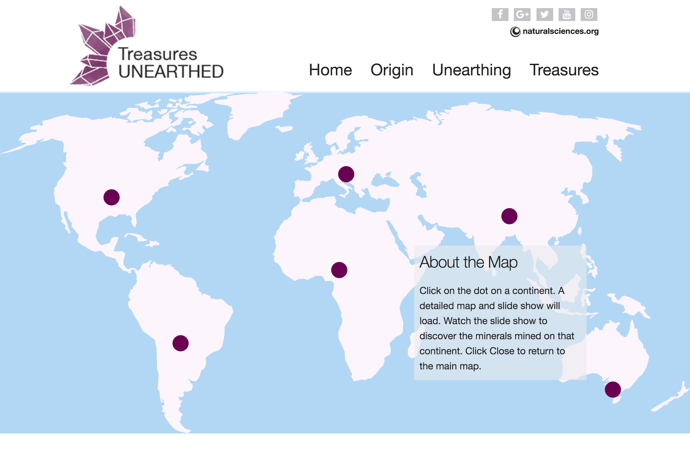
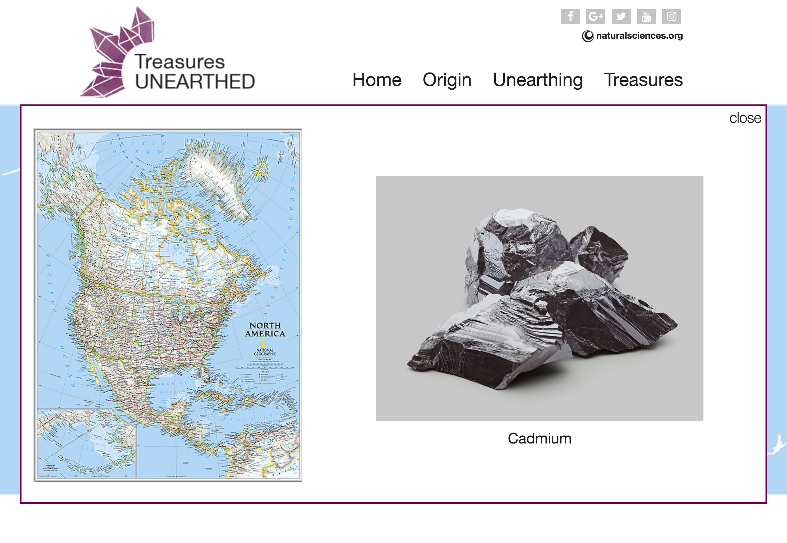

Tresures UNEARTHED
view the project live | view the code on github
About
The NC Museum of Natural Sciences is the largest institution of its kind in the Southeast and one of the nation’s most amazing museums about the natural world. The museum has a sizeable collection of rocks and minerals on display. They are fascinating and absolutely beautiful and each one has a story behind its formation, shape, color, etc. The museum currently does not have a website dedicated to the rocks and minerals exhibit “Geodes: Treasures UNEARTHED”, and that is what this project addresses.
The project aims to commemorate the 140th anniversary of the museum by bringing this collection to life on the interactive web and making it a thing of inspiration for budding geologists, geophysicists and just about anyone who has access to the web.
This was our first group project at The Iron Yard, with three team members. While we all did the research, branding, styleguide and wireframes for the site together. We split the coding by pages. I coded the main page and the unearthing page. Another team member coded the maps page and the third member did the logo design and the treasures page.
Vision/Goal:
The design and development of a website dedicated to show casing one of the museums lesser known exhibits “Geodes: Treasures UNEARTHED”.
The project follows the design process, starting with the research and discovery phase, followed by the concepting and the prototyping phases. The website will be clean, intuitive, and filled with imagery. It will be an interactive website and is aimed to be fun and educational at the same time.
Technology / Tools
HTML5, CSS3, Sass, Javascript, jQuery, Sketch, Illustrator, Photoshop
Main Page

Unearthing Page

Maps Page

Treasures Page

Design Process
1. Research, brainstorming, design discussions and a visit to the museum.
2. Wireframes in pen and paper
3. Logo design.
4. Branding - picked a theme, color pallette and images to go with the exhibit.
5. Created a style guide and kept the general layout consistent with the main museum site.
6. Mockups using Photoshop
7. Coded using HTML5, CSS3, JS and jQuery.
Challenges
The main challenge we faced as a team was collaboration. It took us a while to figure out the best approach on github that would work for all of us and keep merge conflicts to a minimum. Also, sticking to the styleguide and making sure we were consistent across pages was tricky at times. But by working as a team, communicating and letting our research guide us helped ensure that the project was a success!